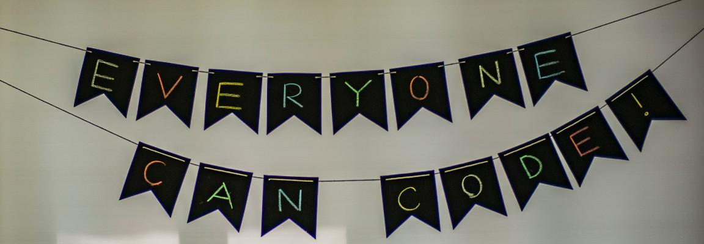

Hello, World (again)

The COVID outbreak has disrupted our world in lots of different ways.
For CodeGrades, it meant our face-to-face work with young coders, in London, had to stop.
We had been meeting since the Autumn of 2019 to prepare both young coders and their ever enthusiastic parents for our initial syllabus of Python grades. Improvised venues included the Barbican, co-working spaces, the Tate Modern and the Royal Society of Arts. It was engaging, friendly and the candidates (no matter their age or level of experience) were a credit to themselves.
They had been building all sorts: from games, to websites to mobile apps. It's such a shame we couldn't complete the courses of study and have folks actually present their projects for grading.
We learned a huge amount from this remarkable group of young people and their parents. Because of their feedback, the syllabus was subsequently refined, various tools were updated (the Mu editor, and PyperCard) and we all naively looked forward to the soon-to-be-imminent easing of lock-down here in the UK.
Yet that didn't happen, and two year's later, the world has changed.
Instead CodeGrades has taken a different direction, and reviving this blog is evidence of this journey.
To cut a long story short,
- Lock-down afforded us the opportunity to connect with many folks in the wider Python community, all over the world, who were interested in our crazy experiment in coding education.
- They called our bluff about making the work we'd been doing accessible. So we put our code where our mouth is, and have a completely new web based version of CodeGrades.
- The assessment process has changed, but we believe it is actually better as a result of this adjustment.
- The new website is completely redesigned, rewritten and feature complete. It is currently undergoing technical alpha testing with trusted invited friends of the project, and we expect an open beta to be released later this summer.
It was always our intention for CodeGrades to be accessible to anyone, anywhere there's an internet connection, and lock-down forced our hand. Every cloud has a silver lining.
Finally, this is just the tip of a very large iceberg.
For instance, here's a sneak-peek of the rough-cut of our "elevator pitch" video (still in development):
Now that various pieces in a very complicated jigsaw puzzle are starting to fit together, expect much more regular updates via this blog, and our Twitter account.
See you soon. :-)